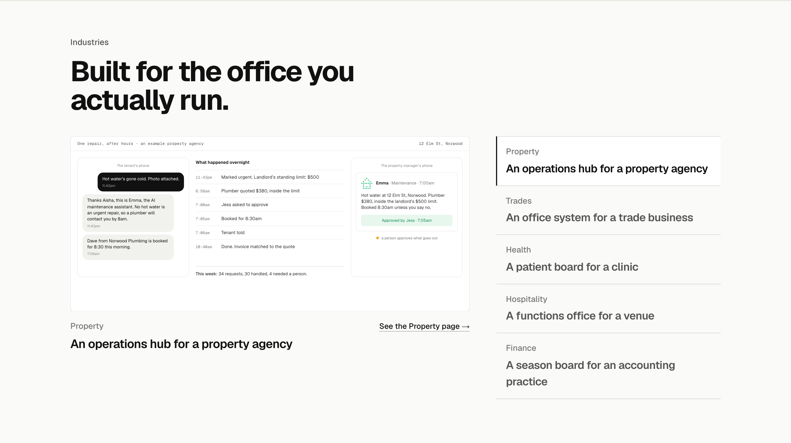
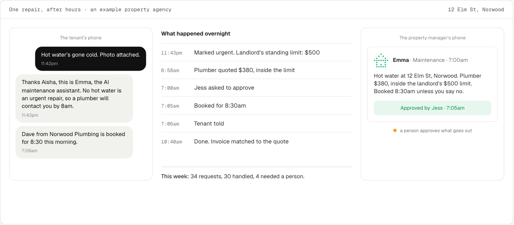
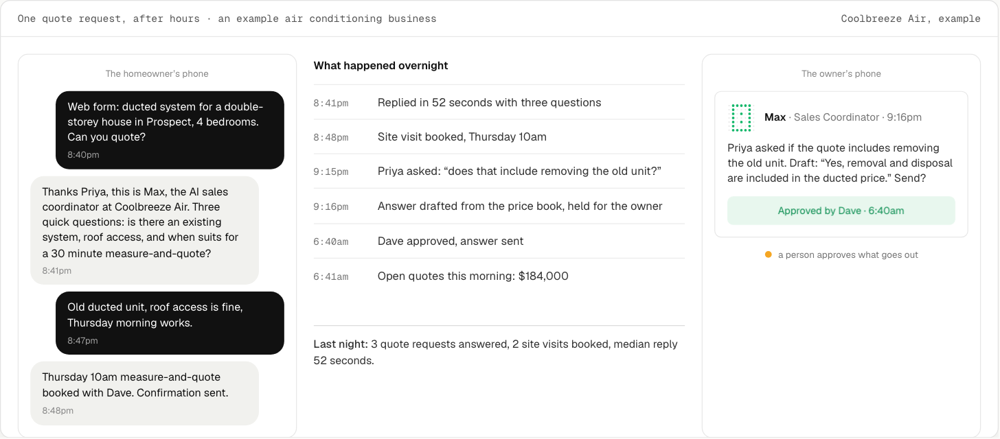
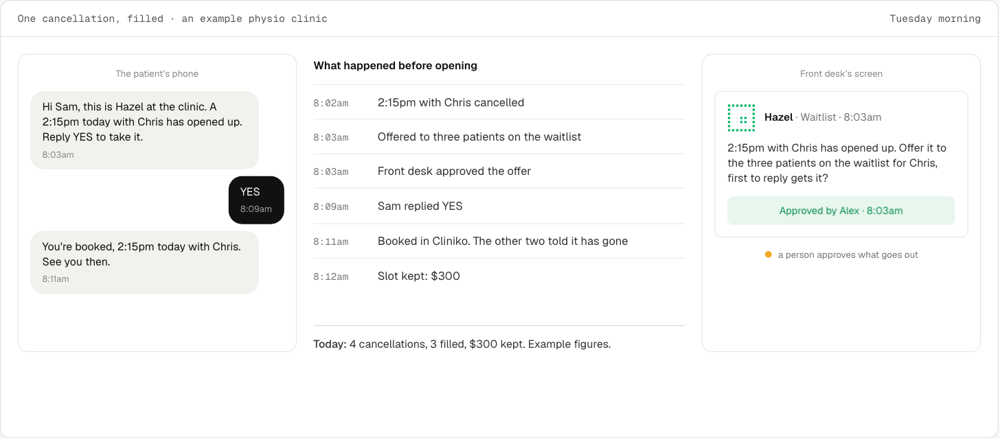
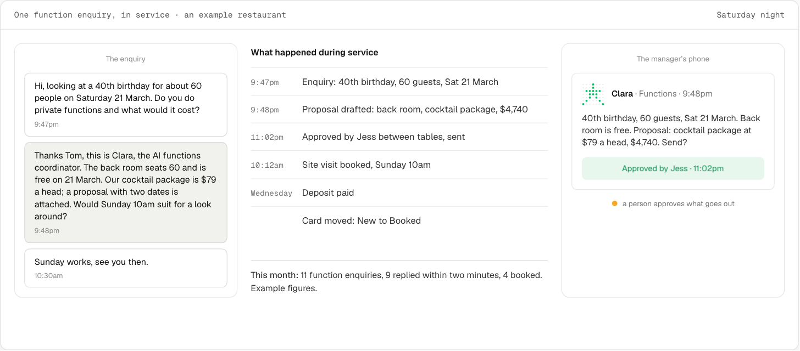
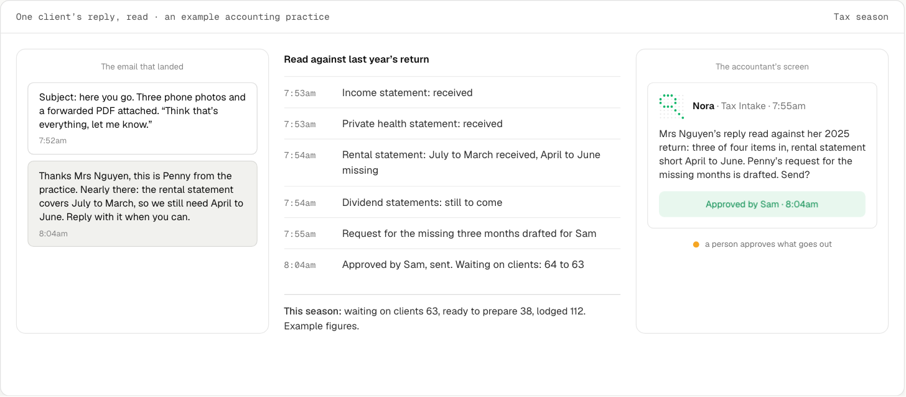

The section in place first, then each industry’s screen close up in its finished state. Each is the visual its research recommended, in the one shape you picked: the customer’s message, what happened with timestamps, the one approval, the day’s count. Every business, name and figure is made up and each screen says so.





